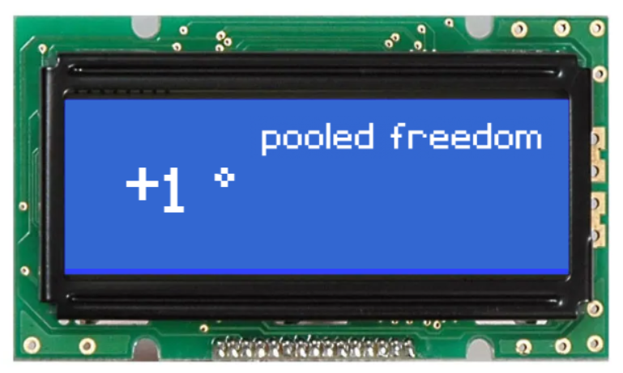

Post-Grad Kit
By Bettina x XP


to maintain degrees of freedom in interdependence
TEMPOrature protractor
on the raft you managed to construct after leaving school with others, how to steer together, and how to do you collaborate without dissolving or loosing your voice and aims ?
each member of the raft has an individual heat flux sensor positioned on the helm. everybody has to touch the helm once in a while to keep their degree of freedom stable. As you hold the helm, your degree of freedom is calculated thanks to the tempo of the raft degree of movements and your personal heat.
°+1 a degree of freedom is gained, °-1 a degree of freedom is lost, °= degree is stable
to reflect on your practice and how it is aligned with your aims ?
Seamslistener
a point d’écoute (listening spot), and its renfort d’écoute (listening reinforcement), are translations for the word "sheet" : the lower corners of a sail and its line used to change the direction.
on the point d’écoute, pass your fingers on the seams and stitched lines of a flowchart. Slide capacities touch sensors sewed in the sail aligned with the diagram’s workflow will detect and record your movements and compare it to the one before, and the one before that, and finally the one you were aiming at the first time you followed the path of the flowchart’s lines.
making you listen to the different directions you took before, and reflect on your own position and the possibilities within your reach.


to increase inter-generational exchanges
salinity microphone
Estuaries are the only ecosystem where water lines can exchange. This sharing area creates an exceptional biomass, where shared thoughts and speech between salty water (freelancers, past students) and fresh chlorine water (students or just graduated students) can take place in a perfect equal foot and anti-hierarchical environment, whose result is a rich spawning ground.
To know if you are, if you have reached the right sharing area and spot, use the salinity microphone meter : if the exchange zone is ideal between salty and fresh chlorine, the microphone will set : time for live estuaries of consciousness !